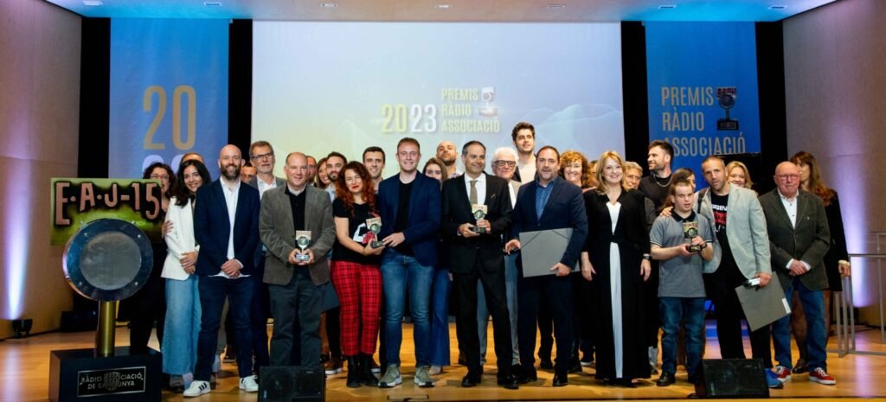
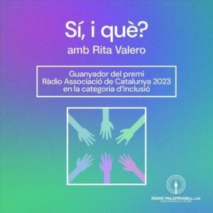

<?xml version="1.0" encoding="UTF-8"?><rss version="2.0"
	xmlns:content="http://purl.org/rss/1.0/modules/content/"
	xmlns:wfw="http://wellformedweb.org/CommentAPI/"
	xmlns:dc="http://purl.org/dc/elements/1.1/"
	xmlns:atom="http://www.w3.org/2005/Atom"
	xmlns:sy="http://purl.org/rss/1.0/modules/syndication/"
	xmlns:slash="http://purl.org/rss/1.0/modules/slash/"
	>

<channel>
	<title>radio | Rita Valero</title>
	<atom:link href="./index.html" rel="self" type="application/rss+xml" />
	<link>../../../index.html</link>
	<description>Voz y palabras</description>
	<lastBuildDate>Sat, 13 Dec 2025 10:16:09 +0000</lastBuildDate>
	<language>ca</language>
	<sy:updatePeriod>
	hourly	</sy:updatePeriod>
	<sy:updateFrequency>
	1	</sy:updateFrequency>
	<generator>https://wordpress.org/?v=7.1.3</generator>

<image>
	<url>../../../wp-content/uploads/2021/08/cropped-favicon-rita-valero-32x32.jpg</url>
	<title>radio | Rita Valero</title>
	<link>../../../index.html</link>
	<width>32</width>
	<height>32</height>
</image> 
	<item>
		<title>Filosofart ràdio</title>
		<link>../../../project/filosofart/index.html</link>
					<comments>../../../project/filosofart/index.html#respond</comments>
		
		<dc:creator><![CDATA[Rita Valero]]></dc:creator>
		<pubDate>Sat, 13 Dec 2025 09:21:43 +0000</pubDate>
				<guid isPermaLink="false">../../../index.html#038;p=1791</guid>

					<description><![CDATA[Filosofart nació primero como un taller de arte y filosofía, realizado en diferentes sesiones, en la Biblioteca de Palafrugell. Más adelante, en el magazín Mode Avió, conducido por Ferran Castelló, Filosofart se convierte en una sección quincenal, un espacio donde el pensamiento se atreve a caminar sin prisa, tomando del arte su inspiración. No busca [&#8230;]]]></description>
										<content:encoded><![CDATA[<p data-start="0" data-end="583"><strong><em>Filosofart</em></strong> nació primero como un <a href="../../../project/filosof-art/index.html">taller de arte y filosofía</a>, realizado en diferentes sesiones, en la Biblioteca de Palafrugell.</p>
<p data-start="0" data-end="583">Más adelante, en el magazín <em data-start="3" data-end="14">Mode Avió</em>, conducido por Ferran Castelló, <em>Filosofart</em> se convierte en una sección quincenal, un espacio donde el pensamiento se atreve a caminar sin prisa, tomando del arte su inspiración. No busca explicar ni convencer; intenta, más bien, recuperar la antigua costumbre de dialogar.</p>
<p data-start="0" data-end="583">En cada entrega, la filosofía y las obras: ya sean <strong>cuadros, música, relatos, escenas cinematográficas </strong>o<strong> fragmentos de la actualidad</strong>, se encuentran como dos voces que no siempre dicen lo mismo, pero que se reconocen en la necesidad de entender qué significa ser humanos en un mundo que cambia a gran velocidad.</p>
<p data-start="585" data-end="1118">La sección propone un tipo de conversación interior. Cuando observamos un lienzo, una secuencia o un gesto cotidiano, nuestra mirada no es nunca inocente: trae consigo preguntas, miedos, intuiciones. <em data-start="785" data-end="797">Filosofart</em> se instala justo ahí, en ese cruce minúsculo donde algo del mundo toca algo de nosotros. Es un laboratorio silencioso donde una imagen puede convertirse en una pregunta moral, donde un cuento despliega dudas sobre nuestra libertad, donde una noticia aparentemente trivial revela las tensiones profundas de nuestra época.</p>
<p data-start="1120" data-end="1820">La filosofía aporta el andamiaje: ofrece conceptos, historias del pensamiento, herramientas para pensar sin caer en la arrogancia de la respuesta definitiva. El arte, por su parte, aporta la fisura, aquello que escapa a las palabras y obliga a mirar de nuevo. La colaboración en <em data-start="1399" data-end="1410">Mode Avió</em> no pretende resolver enigmas, sino acompañar la experiencia de preguntarse. A veces mirando un detalle imperceptible de una pintura; otras, deteniéndose en una frase que resuena tras haber escuchado una canción. Siempre con la convicción de que lo estético y lo filosófico no son mundos paralelos, sino dos formas complementarias de explorar la misma dificultad: comprender quiénes somos y qué lugar ocupamos.</p>
<p data-start="1822" data-end="2076" data-is-last-node="" data-is-only-node="">En ese encuentro <em data-start="1844" data-end="1856">Filosofart </em>es un gesto de pausa en medio del ruido, una invitación a pensar sin miedo, a mirar con más profundidad, a permitir que una obra nos descubra una parte de nosotros que todavía no conocíamos.</p>
<p data-start="1822" data-end="2076" data-is-last-node="" data-is-only-node="">
]]></content:encoded>
					
					<wfw:commentRss>../../../project/filosofart/feed/index.html</wfw:commentRss>
			<slash:comments>0</slash:comments>
		
		
			</item>
		<item>
		<title>20 anys d’Espai Dona Palafrugell</title>
		<link>../../../project/20-anys-despai-dona-palafrugell/index.html</link>
					<comments>../../../project/20-anys-despai-dona-palafrugell/index.html#respond</comments>
		
		<dc:creator><![CDATA[Rita Valero]]></dc:creator>
		<pubDate>Tue, 25 Nov 2025 19:02:52 +0000</pubDate>
				<guid isPermaLink="false">../../../index.html#038;p=1756</guid>

					<description><![CDATA[Fa vint anys, a Palafrugell, va néixer un espai petit però immens. Un lloc on moltes dones han trobat la força que, potser, creien perduda. Un lloc on s’escolta sense jutjar, on s’acompanya sense pressa, on s’encén la llum quan tot sembla fosc. Aquest espai és, i ha estat, Espai Dona. El seu naixement no [&#8230;]]]></description>
										<content:encoded><![CDATA[<p><span style="font-weight: 400;">Fa vint anys, a Palafrugell, va néixer un espai petit però immens. Un lloc on moltes dones han trobat la força que, potser, creien perduda. Un lloc on s’escolta sense jutjar, on s’acompanya sense pressa, on s’encén la llum quan tot sembla fosc. Aquest espai és, i ha estat, Espai Dona.</span></p>
<p><span style="font-weight: 400;">El seu naixement no va ser casual. Va ser fruit d’un temps de canvi, d’una societat que començava a posar nom al que durant massa anys havia estat silenciat: la violència masclista, la desigualtat, la falta d’oportunitats. </span></p>
<p><span style="font-weight: 400;">L’any 2004, l’Estat espanyol aprovava la Llei Integral contra la Violència de Gènere. Un any després, Palafrugell responia amb convicció i sensibilitat creant el seu propi servei, pioner a les comarques gironines.</span></p>
<p><span style="font-weight: 400;">Des d’aleshores, Espai Dona ha crescut amb el poble. Ha escoltat històries, ha donat suport, ha teixit complicitats i ha ajudat a construir consciència. Ha estat un reflex de la societat, però també un motor de canvi, posant rostre, nom i veu a tantes realitats amagades.</span></p>
<p><span style="font-weight: 400;">Avui, dues dècades després, celebrem no només l’aniversari d’un servei, sinó el camí col·lectiu cap a la igualtat i la llibertat. </span></p>
<p><span style="font-weight: 400;">Recordem les primeres passes, reconeixem els avenços legislatius que ho han fet possible i mirem endavant amb la mateixa determinació que aquell 2005.</span></p>
<p>Pots escoltar el Programa Especial de ràdio que vam fer, en directe, des de la seu d&#8217;Espai Dona, per Commemorar aquest 20è aniversari al següent enllaç:</p>
<p><a href="https://podcasts.radiopalafrugell.cat/@20AnysEspaiDona/episodis">20 Anys d&#8217;Espai Dona</a></p>
<p>El programa està dividit en 3 parts:</p>
<ol>
<li><strong>El naixement i la trajectòria d&#8217;Espai Dona: </strong>on repassem com va nèixer i com ha evolucionat el servei, amb les intervencions de Maria José Merino, cap de l’àrea d’Acció social, Ciutadania i Joventut, i Sònia Vivolas, tècnica d’Igualtat. I sentim els missatges que ens han fet arribar Marta Vergonyós, Ruth Bosshard, l’antiga conserge Lola Quesada i les exregidores Mònica Tauste i Roser Massaguer. Inclou la cançons del 25N de Marina Gil (2019).</li>
<li><strong>Els projecte d&#8217;Espai Dona: </strong>on presentem els projectes que ha fet i fa Espai Dona, com <em>Creactiva’t</em>, tallers als centres educatius i el projecte <em>El Benestar al centre</em>. Entrevistem Marta Vergonyós Cabratosa, Maria José Cruz, Sònia Vivolas i Mar Batallé. A més, l’artista Aitana Gilabert (Eye Tana) ens presenta i fa un petit avançament de la cançó que estrenarà pel 25N. Sentim els missatges que ens han fet arribar l’Escola Torres i Jonama i l’institut Baix Empordà, a més de Marina Trias, Víctor Illescas, Júlia Alemany, Arar i Tamara Navarro. Ens acompanyen les cançons del 25N de Paula Sánchez (2024), Rita Valero (2014) i Mireia Costa (2021).</li>
<li><strong>Celebració i perspectives de futur: </strong>on recollim la celebració de les activitats del 20è aniversari, amb la projecció del documental “Empieza en ti”, formacions i la presentació de “Més poètica i menys estètica” amb Laia Estremeiro. Entrevistem la regidora d’Acció Social, Ciutadania i Habitatge, Margarita Mauri, que també ens parla sobre el pla d’igualtat municipal i els grups de treball amb educació.Sentim les cançons del 25N d’Anna Sáez, els Festucs i diverses dones que interpreten un tema de Roba Estesa.</li>
</ol>
]]></content:encoded>
					
					<wfw:commentRss>../../../project/20-anys-despai-dona-palafrugell/feed/index.html</wfw:commentRss>
			<slash:comments>0</slash:comments>
		
		
			</item>
		<item>
		<title>El podcast de Rita Valero «Sí, i què?» gana el Premio RAC a la Inclusión</title>
		<link>../../../project/el-podcast-de-rita-valero-si-i-que-gana-el-premio-rac-a-la-inclusion/index.html</link>
					<comments>../../../project/el-podcast-de-rita-valero-si-i-que-gana-el-premio-rac-a-la-inclusion/index.html#respond</comments>
		
		<dc:creator><![CDATA[Rita Valero]]></dc:creator>
		<pubDate>Tue, 01 Aug 2023 07:12:25 +0000</pubDate>
				<guid isPermaLink="false">../../../index.html#038;p=1571</guid>

					<description><![CDATA[El podcast “Sí, i què?”, elaborado por Rita Valero y con la participación de Maria Sureda en la primera etapa, ha ganado el premio Ràdio Associació en la categoría de Inclusión “Sí, i què?” se emite desde septiembre de 2022, y tiene el objetivo de romper esquemas y dar a conocer realidades que nos acompañan [&#8230;]]]></description>
										<content:encoded><![CDATA[<blockquote><p><strong>El podcast “<em>Sí, i què?</em>”, elaborado por Rita Valero y con la participación de Maria Sureda en la primera etapa, ha ganado el premio Ràdio Associació en la categoría de Inclusión</strong> <strong>“<em>Sí, i què?</em>” se emite desde septiembre de 2022, y tiene el objetivo de romper esquemas y dar a conocer realidades que nos acompañan y no vemos. </strong></p></blockquote>
<p>El podcast “<em>Sí, i què?</em>” ha ganado el premio Ràdio Associació de Catalunya 2023 en la categoría de Inclusión. El jurado de los galardones, los más importantes de la radio en catalán, destaca que habla «del día a día de personas con diversidad funcional y en riesgo de exclusión social». El podcast está dirigido y presentado y montado por la comunicadora Rita Valero, especialista en inclusión social y colaboradora de Ràdio Palafrugell desde 2013. El presidente de Ràdio Associació de Catalunya, Jordi Margarit, acompañado de la secretaria del jurado, Margarida Moles,  han explicado que el jurado ha valorado del «<em>Sí, i què?</em>» el hecho de que trate “de forma desacomplejada y sin embargo seria temáticas como el sexo o la manera de superar los obstáculos del día a día”. “<em>Sí, i què?</em>” habla del día a día de personas con diversidad funcional y en riesgo de exclusión social, tratando la superación individual y colectiva de las barreras que se encuentran y cómo hacerles frente. Se rompen esquemas para dar a conocer las realidades que muchas veces no se ven.</p>
<p>La gala de entrega de premios se celebró en el Auditorio ONCE el pasado 20 de abril, y fue presentada por Jair Domínguez, Neus Rossell y Peyu (“El Búnker”).</p>
<p>Puedes ver el acto en el siguiente enlace: <a href="https://youtu.be/UWgtDg2vEYw?t=274" target="_blank" rel="noopener"><strong>23ns PREMIS RÀDIO ASSOCIACIÓ. CATEGORIA D&#8217;INCLUSIÓ</strong></a></p>
<p><a href="https://radioassociacio.cat/premios-radio-associacio-2023/" target="_blank" rel="noopener">Premios Radio Associació</a></p>
<p> </p>
]]></content:encoded>
					
					<wfw:commentRss>../../../project/el-podcast-de-rita-valero-si-i-que-gana-el-premio-rac-a-la-inclusion/feed/index.html</wfw:commentRss>
			<slash:comments>0</slash:comments>
		
		
			</item>
	</channel>
</rss>
